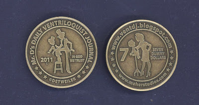

1/1/11! Happy New Year!
1/2/2011
HAPPY NEW YEAR 2011!
.
Mr. D's $7.00 Ventriloquist Collector Coins for year 2011 are here!
{kind=link}

I've set aside 77 of the new 2011 $7 coins to be given away by prize drawings throughout the 2011 year. Seven coins will be awarded on the 11th day of each month, Jan-Nov, beginning 1/11/11..
Note: With the number of persons registered for prize drawings (535) the current odds of winning a free 7/11 Coin during the year are approximately 1:7. Of course, the odds will change throughout the year as more blog visitors register and the number of drawings decrease.)
.
A phrase on the coin reads "SEVEN DUMMY DOLLARS", but just like last year's $5.00 coin, I will redeem a coin as true U.S. dollars if spent at http://www.maherstudios.com/ . You should know, however, that last year's 2010 coins are currently priced on the secondary market for considerably more than face value! Nice!
.
This new $7 coin is the second of a planned series of six different coins. God willing, the third coin will be released at the ventriloquist ConVENTion this coming July, and the fourth in the series in December.
.
While my supply lasts, you may purchase these $7 Collector Coins for $7.00 each; 3 for $20.00 Postpaid. Contact Mr. D